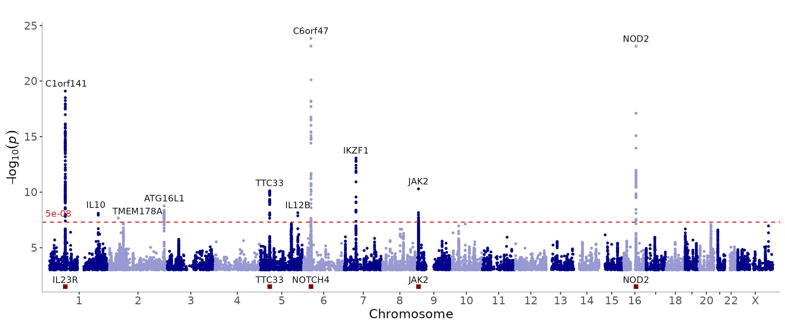

In addition to a genome-wide Manhattan plot, we can also display a single chromosome.
manhattan(CD_UKBB, annotate=5e-8, chr="chr1")Display genes of interest at the bottom of the Manhattan plot to get a visual representation of their position relative to association peaks.
genes = c("IL23R","NOTCH4","NOD2","JAK2","TTC33")
manhattan(CD_UKBB, annotate=5e-8, highlight_genes=genes)
We can display multiple traits or multiple datasets on the same
Manhattan plot. In the introduction, we saw how to overlap the results.
We can also display the results vertically stacked. We use the
ntop parameter to specify the number of datasets to display
on the top half of the plot.
genes = c("IL23R","NOTCH4","NOD2","JAK2","TTC33")
manhattan(
list(CD_UKBB, CD_FINNGEN),
legend_labels=c("UKBB", "FinnGen"),
annotate=c(5e-8,5e-8),
ntop=1,
highlight_genes=genes,
highlight_genes_ypos=-1
)Make the plot prettier by giving more space to the labels by extending the yaxis (using ymax and ymin) and by changing the position and angle of the labels (using angle and the nudge_y arguments).
genes = c("IL23R","NOTCH4","NOD2","JAK2","TTC33")
manhattan(
list(CD_UKBB, CD_FINNGEN),
legend_labels=c("UKBB", "FinnGen"),
annotate=c(5e-8,5e-8),
ntop=1,
highlight_genes=genes,
highlight_genes_ypos=-1.5,
ymin=-70,
ymax=50,
nudge_y=12,
angle=90
)The same plot as above with gray shades/rectangles distinguishing
between chromosomes instead (using theme_grey=T)
genes = c("IL23R","NOTCH4","NOD2","JAK2","TTC33")
manhattan(
list(CD_UKBB, CD_FINNGEN),
legend_labels=c("UKBB", "FinnGen"),
annotate=c(5e-8,5e-8),
ntop=1,
highlight_genes=genes,
highlight_genes_ypos=-1.5,
ymin=-70,
ymax=50,
nudge_y=12,
angle=90,
theme_grey=T
)Use annotate_with_vline to highlight association peaks.
Use different alpha, size and
shape for the two datasets to try to differentiate a little
better.